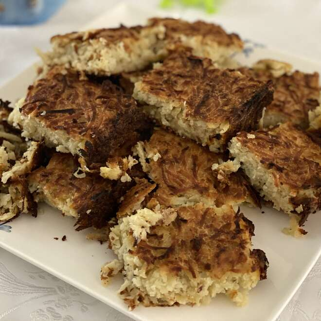

The Best and Easiest Kugel Ever

Kugel is a taditional Jewish Ashkenazi (Ashkenazi = of Eastern European origin) dish, made
mostly with (mostly) egg noddles or potatoes. This is recipe is for a potato kugel. It is easy, fast and delicious.
Ingredients
- 1 tablespoon vegetable oil
- 10 potatoes, peeled and grated
- 2 onions, peeled and grated
- 5 eggs
- ⅓ cup vegetable oil
- 2 teaspoons salt
- 1 teaspoon black pepper
Steps
- Preheat an oven to 350 ºF (175 ºC). Grease a 9x13 inch pan with 1 tablespoon of vegetable oil.
- Combine the potatoes and onions in a large bowl. Mix in the eggs, 1/3 cup of vegetable oil, salt, and pepper. Pour the mixture into the prepared pan.
- Bake in the preheated oven until the top is golden brown and crisp, 1 1/2 to 2 hours.
Enjoy
Back to Main Page